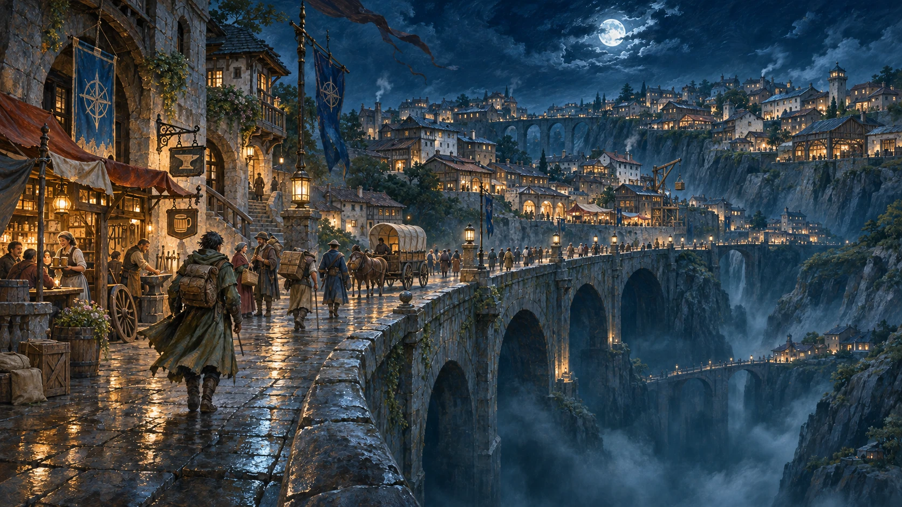
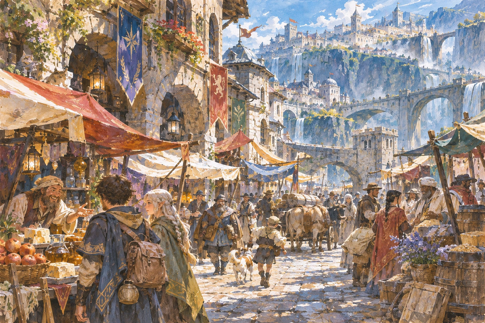
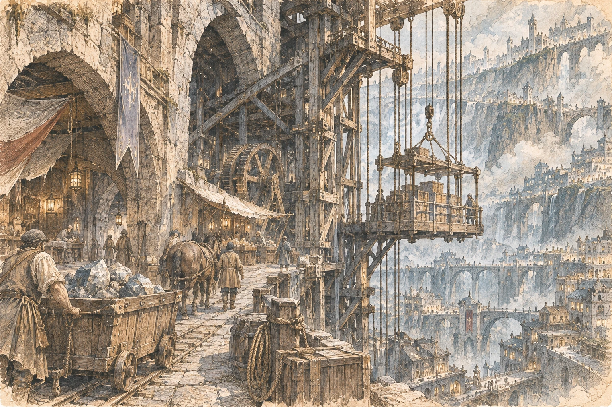
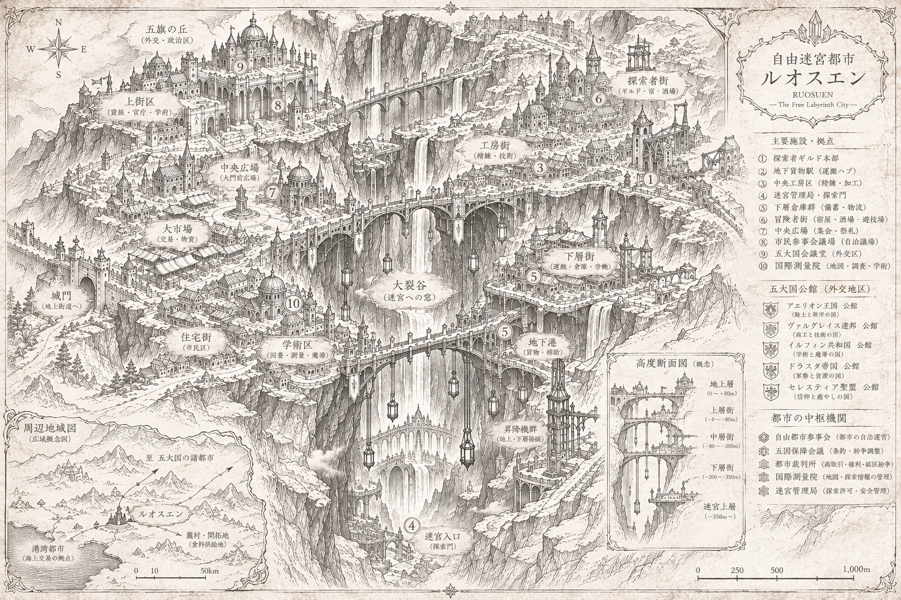

四人で始める、短編ダンジョン探索。
古い地層に、新しい道がひらく。
崩れた岩壁の向こうに、
まだ地図に描かれていない空洞がある。
その先にも、道が続いている。

異国の言葉も、未踏の噂も、この街へ。
川港に届く、日々の糧。
工房の槌音。帰還を迎える酒場の灯り。
地下を結ぶ道に、人が集まる。
商人も、職人も、探索者も。
それぞれの理由を、この街に持ち寄って。

帰ってくる場所がある。
街角の風景を読む
地上と地下を、人の手がつなぐ。
荷が行き交う、その下へ。
岩の天井の下に、魔導船の港がある。

その先で、何を見つけるだろう。
領域主の縄張りへ。
そこに生きるものを、君たちはまだ知らない。

地図が、宝になる。
水場の位置。荷が通れる橋。帰り道。
君たちが確かめたことを、次に進む誰かが待っている。
四人の探索者。ひとつの依頼。その先は、君たちが決める。
この都市を拠点に、迷宮へ。
救助、調査、探索。引き受けた仕事を果たして、帰ってくる。
ひとつの冒険が終わっても、世界の先は続いている。
都市の夜
君は、何を求めて迷宮へ行く？
財宝。知識。誰かとの約束。
その理由が、この世界で生きる君の始まりになる。
- 何を探しに行く？
- 誰と、つながっている？
- なぜ、共に歩く？
キャラクターをつくる
最初は、迷宮へ行く理由がひとつあればいい。
出身や職業、仲間とのつながりは、相談しながら育てよう。
4人のプレイヤー ／ 1〜2回で完結する短編
D&D 2024年版を暫定採用。次回の導入・開始条件は相談中です。
参加前に確かめること
もっと、この世界へ。
気になる場所から、少しずつ。すべてを読んでからキャラクターを作る必要はありません。